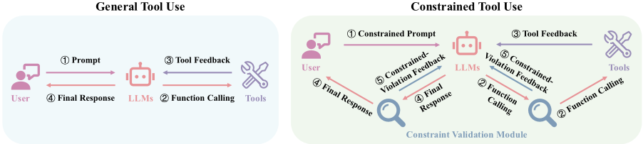
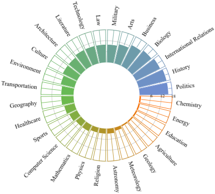
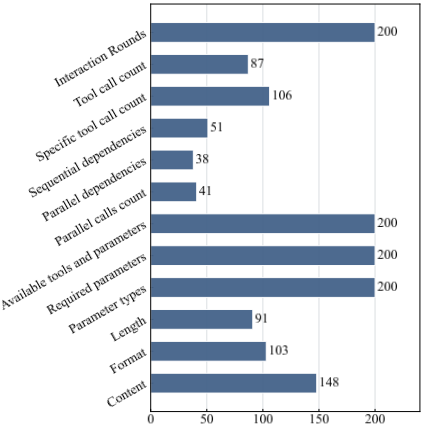
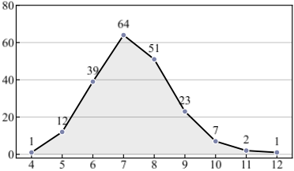
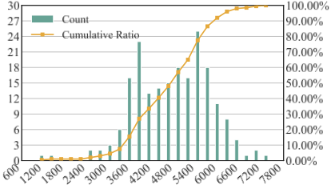
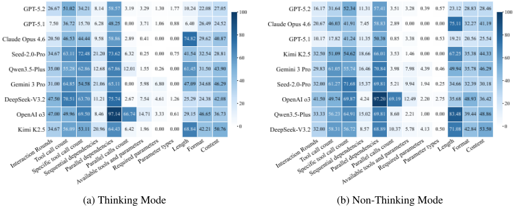
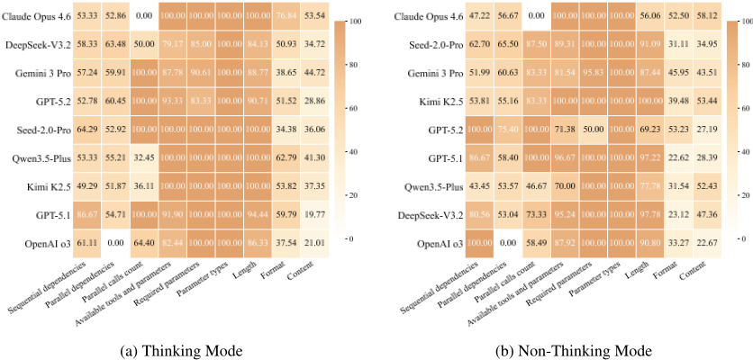

CCTU：一个面向复杂约束下工具使用的评测基准
论文针对现有评测将工具调用与指令遵循、自我修正割裂评估、无法反映真实生产中'带约束使用工具'场景的问题，构建了 CCTU 基准。方法上提出 resource、behavior、toolset、response 四个维度共 12 类约束的分类体系，基于 FTRL 数据集通过自动化流水线（参考轨迹生成、受控约束扩展、LLM 过滤、任务上下文集成）构建 200 个测试用例，平均每例含 7 类约束、提示长度超 4,700 token，并开发可执行约束校验模块，在多轮交互中逐步校验合规并以 tool/user 消息注入反馈。对 9 个主流 LLM 在 thinking 与 non-thinking 模式下的评测显示：严格满足全部约束时所有模型 PSR 低于 20%，超 50% 用例出现约束违反（资源与响应维度最严重），且模型收到详细违规反馈后自我修正能力有限（最高 65.36%）。结论指出指令遵循与自我修正是构建可靠工具使用 Agent 的关键瓶颈，thinking 模式还可能因 overthinking 反而降低表现。
现有基准将工具选择调用与指令遵循、自我修正分开评估，无法刻画真实部署中 LLM 必须在延迟限制、工具调用频次限制、响应格式规则等显式约束下使用工具的整合能力；一个能正确调用工具的模型仍可能违反约束，而指令遵循强的模型可能难以区分工具角色。论文要系统评测 LLM 在复杂约束下的工具使用表现，并分析约束违反模式与自我修正瓶颈。
提出四维度（resource、behavior、toolset、response）12 类约束分类体系；基于 FTRL 数据集设计四阶段自动化构建流水线，用 Qwen3-32B 生成参考轨迹、注入约束并过滤冲突，再经双人独立标注迭代校验数据与校验代码；核心是可执行约束校验模块，为每类约束预生成可执行校验代码，在多轮交互中逐步检查合规，违规时以 tool 或 user 消息形式注入详细反馈且不改变模型推理配置；评测采用 SR（解决全部子查询并满足全部约束）与更严格的 PSR（无任何约束违反）两个指标。
9 个 SOTA 模型在严格约束下 PSR 全部低于 20%，多数低于 15%
所有模型在超过 50% 的用例中出现约束违反，DeepSeek-V3.2 高达 86.83%；资源与响应维度违反最严重
自我修正率最高为 Claude Opus 4.6 的 65.36%，其他模型低于 60%，OpenAI o3 仅 18.57%
GPT-5.2 在 parallel multi-hop 任务上的 PSR 比 single-hop 低 14.67%；thinking 模式下 GPT-5.2 的 PSR 比 Kimi K2.5 高逾 10%
Seed-2.0-Pro 在 thinking 模式下 PSR 高 4.83%、SR 高 2.16%；但 Claude Opus 4.6 与 Kimi K2.5 因 overthinking 在 thinking 模式下表现反而下降
Claude Opus 4.6 SR 最高（靠强自我修正补偿违规），GPT-5.2 PSR 最高（靠强指令遵循），揭示两种不同的性能策略
DeepSeek-V3.2 thinking 模式修正率达 52.77% 但整体表现仍低，说明自我修正强不等于整体性能好
数据质控中超过 70% 的数据无需人工修改，修改轮次不超过两轮
与已有工作的区别：先前工具使用评测主要看模型最终是否解决用户查询、很少考虑约束；指令遵循评测多针对静态指令。CCTU 首次将工具使用、指令遵循与自我修正整合到同一约束化场景中系统评估，在多轮交互中做 step 级可执行合规校验（而非依赖工具执行结果隐式约束），并给出 12 类约束的结构化分类体系与违反模式、自我修正瓶颈的实证分析。
相关度级别：high
命中能力域：3.3 Agent 架构与工具使用 | 3.5 评测与可靠使用
理由：直接命中团队两个核心能力域：3.3 方面，论文聚焦 Agent 工具调用在约束下的执行可靠性（调用频次预算、顺序/并行依赖、幻觉参数、响应格式），其可执行约束校验模块就是一种 harness 层的 step 级合规检查与反馈注入设计，可直接借鉴到团队 Agent loop 中；3.5 方面，这是一个完整的 LLM 应用评测基准与实证研究，其 SR/PSR 指标设计、thinking 模式利弊分析、约束违反模式与自我修正瓶颈的结论，对团队的工具调用模型选型、评测体系建设和 Agent 可靠性保障有直接指导意义。
建议动作：深入精读并做内部分享
arXiv:2603.15309v2 [cs.CL] 2026年9月21日
CCTU：复杂约束下的工具调用基准测试
1 1 ∗ 1 ∗ 2
Junjie Ye ∗，Guoqiang Zhang，Wenjie Fu，Zelin Li，Tao Gui 1，Qi Zhang 1，Xuanjing Huang 1 †
1 复旦大学 2 西北大学
jjye23@m.fudan.edu.cn，xjhuang@fudan.edu.cn
在显式约束下通过工具调用解决问题，对大型语言模型（LLMs）而言是一个极具挑战性却又无法回避的场景，其要求模型具备函数调用、指令遵循和自我修正等能力。然而，由于缺乏专门的评估，该领域的进展一直受到阻碍。为此，我们提出了 CCTU，一个用于评估 LLM 在复杂约束下工具调用能力的基准测试（benchmark）。CCTU 建立在一个涵盖四个维度（即资源、行为、工具集和响应）的 12 类约束分类体系之上。该基准测试包含 200 个精心筛选且具有挑战性的测试用例，覆盖多样化的工具调用场景，每个用例平均涉及七种约束类型，平均提示长度超过 4,700 个 token。为实现可靠评估，我们开发了一个可执行的约束验证模块，该模块执行步骤级验证，并在模型与其环境的多轮交互过程中强制约束合规。我们在思考（thinking）与非思考（non-thinking）两种模式下评估了九个最先进的 LLM。结果表明，当要求严格遵守所有约束时，没有任何模型的任务完成率超过 20%。进一步分析显示，模型在超过 50% 的用例中违反约束，尤其是在资源和响应维度上。此外，即使在收到关于约束违反的详细反馈后，LLM 的自我修正能力仍然有限，这凸显了开发鲁棒工具调用智能体（agent）过程中的一个关键瓶颈。为促进未来研究，我们公开了数据 1 和代码 2。
* 同等贡献。
† 通讯作者。
1 https://huggingface.co/datasets/Junj ie-Ye/CCTU
2 https://github.com/Junjie-Ye/CCTU
在显式约束下通过工具调用解决问题，对大语言模型（LLMs）而言是一项重大挑战（Anthropic, 2026; Google, 2025; Guo et al., 2025; OpenAI, 2025c）。如图 1 所示，此类场景要求模型展现出强大的函数调用能力（Qu et al., 2025）以准确选择和调用工具，可靠的指令遵循能力（Lou et al., 2024）以在整个过程中始终遵守指定约束，以及有效的自我改进机制（Madaan et al., 2023）以在动态交互中调整自身行为。与此同时，这些需求在实际部署中不可避免。例如，LLM 在使用外部工具时，必须在延迟限制（Zheng et al., 2024）、工具访问频率限制（Qin et al., 2024）以及预定义的响应格式规则（Qi et al., 2025）等约束下运行。
现有研究孤立地评估模型能力的特定方面。一条研究路线考察多种设置下的工具选择与调用，从单轮（Schick et al., 2023; Zhuang et al., 2023）到多轮（Qin et al., 2024; Chen et al., 2025）以及复杂场景（Wang et al., 2025; Ye et al., 2025a）。另一条路线聚焦于指令遵循，涵盖可由规则验证的维度（Zhou et al., 2023）和更为细微的维度（Deshpande et al., 2025; Qin et al., 2025）。此外，越来越多的工作探索了自我改进（Madaan et al., 2023; Shinn et al., 2023）。
然而，这些基准测试（benchmark）并未捕捉到受约束工具调用场景下的综合性能。能够正确调用工具的模型仍可能无法遵守约束，而指令遵循能力强的模型也可能难以区分工具角色。模型在动态环境中违反约束后能否进行自我改进，这一问题仍缺乏充分探索，这凸显了构建能够系统性评估受约束工具调用性能的 benchmark 的必要性。

为解决这一问题，我们提出了 CCTU，一个用于评估 LLM 在复杂约束下工具调用能力的 benchmark。我们构建了一个涵盖四个维度（即资源、行为、工具集和响应）的 12 类约束分类体系，并精心整理了 200 个覆盖多样化工具调用场景的具有挑战性的测试用例。通过基于 LLM 的过滤与人工校验，每个最终确定的用例平均涉及七种约束类型，提示长度超过 4,700 个 token。此外，我们还开发了一个可执行的约束验证模块，用于在多轮交互过程中进行步骤级的合规性检查。
我们在 CCTU 上以思考（thinking）与非思考（non-thinking）两种模式评估了九个最先进的大语言模型（LLM）。表现最佳的模型在严格遵守约束的条件下任务完成率不足 20%，大多数模型则低于 15%，凸显了其综合能力的严重局限。进一步分析表明，模型在超过 50% 的情况下违反约束，尤其是在资源与响应维度上，并且难以基于详细的违规反馈进行自我精炼，这是构建鲁棒工具调用智能体（agent）的一个重大瓶颈。
我们的贡献总结如下：
并识别关键错误模式与自我精炼瓶颈。
工具调用评估 工具调用已成为大语言模型（LLM）的核心应用，催生了覆盖多种场景的大量评估研究（Chen et al., 2024; Tang et al., 2023），并逐步演进到多跳与并行任务等复杂设定（Patil et al., 2024; Ye et al., 2025a），反映出面向生产任务这一更广泛的趋势（Mialon et al., 2023; Trivedi et al., 2024; Xi et al., 2025）。然而，以往工作大多主要评估模型最终能否解决用户查询，对支配工具调用的约束考虑有限。相比之下，我们的工作在复杂约束下评估工具调用，强调模型能否按照指定限制规划动作轨迹，并系统分析不同约束类型如何影响性能。
指令遵循评估 已有大量工作评估大语言模型的指令遵循能力。早期研究依赖基于模板的方法（Pyatkin et al., 2025; Yao et al., 2024; Zhou et al., 2023），而更先进的方法则借助 LLM-as-a-judge 范式提升指令复杂度（Deshpande et al., 2025; Qin et al., 2025; Zheng et al., 2025）。近期工作已将此类评估扩展到智能体（agentic）设定（Qi et al., 2025）。然而，这些研究主要评估响应是否违反静态指令中的约束。相比之下，我们构建了一个可执行的约束验证模块，在多轮交互过程中进行步骤级的合规性检查。
| Benchmarks. | Basic Information.#Number | Basic Information.Avg. Tools | Basic Information.Avg. Len. | Basic Information.Precise Eval. | Constraint Dimensions.Resource | Constraint Dimensions.Behavior | Constraint Dimensions.Toolset | Constraint Dimensions.Response | Evaluated Capabilities.Func. Call. | Evaluated Capabilities.Ins. Follow. | Evaluated Capabilities.Self-Refine. |
|---|---|---|---|---|---|---|---|---|---|---|---|
| IFEval (Zhou et al., 2023) | 541 | 0 | 54 | ✓ | ✗ | ✗ | ✗ | ✓ | ✗ | ✓ | ✗ |
| IFBench (Pyatkin et al., 2025) | 300 | 0 | 90 | ✓ | ✗ | ✗ | ✗ | ✓ | ✗ | ✓ | ✗ |
| MultiChallenge (Deshpande et al., 2025) | 273 | 0 | 1636 | ✗ | ✗ | ✗ | ✗ | ✓ | ✗ | ✓ | ✗ |
| BFCL v4 (Patil et al., 2024) | 5088 | 7.08 | 1446 | ✓ | ✗ | ✗ | ✓ | ✓ | ✓ | ✓ | ✗ |
| τ -bench (Yao et al., 2025) | 165 | 12.36 | 4245 | ✓ | ✗ | ✗ | ✓ | ✗ | ✓ | ✗ | ✗ |
| FTRL (Ye et al., 2025b) | 200 | 9.26 | 3864 | ✓ | ✗ | ✗ | ✓ | ✗ | ✓ | ✗ | ✗ |
| AGENTIF (Qi et al., 2025) | 707 | 3.92 | 2387 | ✗ | ✗ | ✓ | ✓ | ✓ | ✓ | ✓ | ✗ |
| CCTU (Ours) | 200 | 9.26 | 4754 | ✓ | ✓ | ✓ | ✓ | ✓ | ✓ | ✓ | ✓ |
| Benchmarks. | Basic Information.#Number | Basic Information.Avg. Tools | Basic Information.Avg. Len. | Basic Information.Precise Eval. | Constraint Dimensions.Resource | Constraint Dimensions.Behavior | Constraint Dimensions.Toolset | Constraint Dimensions.Response | Evaluated Capabilities.Func. Call. | Evaluated Capabilities.Ins. Follow. | Evaluated Capabilities.Self-Refine. |
工具集约束是工具调用场景的基础。它们通过结构化文档定义工具的特性与使用规范。以往的工作通常依赖工具执行结果来隐式地实施这些约束，而我们则进行显式验证。1) 可用工具与参数限制模型允许调用的工具集合，以及允许的参数取值范围。任何超出该预定义范围的调用都被视为幻觉调用。2) 必需参数定义了调用工具时必须提供的强制性实参。遗漏任何必需参数都会导致调用失败。3) 参数类型要求模型正确识别参数值的格式，并在必要时执行适当的类型转换。提供类型不正确的值会导致调用失败。
响应约束源于对模型输出形式与结构的要求，规定最终响应必须遵循预定义的规范。违反任何约束的响应都必须重新生成。1) 长度限制模型最终响应的允许范围。2) 格式规定最终响应的呈现样式，例如纯文本、JSON 或表格形式。3) 内容对最终响应中必须出现的元素提出具体要求，包括指定语言、标识符、关键词或其他规定信息。

我们通过一个由四个组成部分构成的系统性流程 3 构建了 200 个测试用例：提示词来源、约束集成、可执行约束验证和质量控制。4
提示词来源 我们采用 FTRL（Ye et al., 2025b）作为初始数据集，该数据集根据子查询之间的相互关系分为四类：单跳（single-hop）、并行单跳（parallel single-hop）、多跳（multi-hop）和并行多跳（parallel multi-hop），每类各 50 个实例。每个实例都指定了子查询、所需工具和预期答案，从而能够直接验证任务完成情况。此外，每个实例平均涉及 9.26 个无显式约束的本地可执行工具，这对函数调用能力提出了很高的要求，同时也为引入各类约束提供了灵活的基础。
约束集成 为了将我们的约束融入初始数据集，我们设计了一个自动化工作流，以高效且可控的方式重写现有实例。该工作流包含四个阶段。1) 参考轨迹生成。为避免不切实际的设置或逻辑矛盾，我们首先使用大语言模型（LLM）为每个实例采样一条正确的求解轨迹作为参考。5 鉴于该数据集的难度（Ye et al., 2025b），为了提高采样效果，我们向模型提供了未解决的子查询和本地工具实现。所得轨迹有意保留试错步骤，以增加后续约束扩展过程中的多样性。2) 受控约束扩展。对于每个实例，我们使用 LLM 迭代式地引入约束，遍历除 Toolset 维度 6 之外的各约束类型，每种类型被选中的概率为 50%。模型在纳入每条约束时都与参考轨迹保持一致。我们施加了结构性规则：在单跳和并行单跳实例中排除顺序依赖，在单跳和多跳设置中排除并行依赖和并行调用次数约束。3) 基于 LLM 的过滤。我们使用 LLM 验证修改后实例的一致性与可行性，识别约束之间的冲突，并确保与场景结构保持一致（例如，标记出多跳场景中交互轮次限制为 1 的情形）。如果检测到不一致，流程将返回上一阶段，直至验证通过。4) 任务上下文集成。由于原始数据集仅包含用户查询，我们使用 LLM 生成场景级任务上下文，以提供与约束无关的背景描述，并将其与带约束的规范相结合，构成完整的用例。
3 我们在附录 B 中对该流程进行了总结。
4 流程中使用的提示词见附录 E。
5 我们在流程中采用 Qwen3-32B（Yang et al., 2025），因为其在较低计算成本下具有出色的性能。

6 工具集维度的约束通过原始数据集中的工具文档引入。

约束验证 我们设计了一个约束验证模块，该模块在模型每次输出步骤之后运行（图 1），评估输出是否满足预定义的约束。如果符合约束，它会触发相应的工具调用或结束工作流，而不改变执行逻辑。如果检测到违规，它会返回详细的反馈并提示进行修订。该反馈以工具消息或用户消息的形式注入，从而保留模型原有的推理配置。该模块使用由大语言模型（LLM）预先生成的可执行验证代码来处理每条约束，这些代码通过分析累积的交互日志来检查合规性。
质量控制 为确保数据质量，我们对每个数据实例及其约束验证代码进行人工核验。1) 数据核验。每个实例由一名计算机专业研究生进行审查，检查是否存在相互冲突的约束、不合理的设置以及逻辑不一致之处，并根据需要进行人工修订。随后由第二名学生对实例进行评估；只有当连续两名标注者一致认为实例没有问题时，该流程才会终止，否则将重新进入修订环节，直至达成共识。2) 代码核验。同样的流程也被用于检查约束验证代码，当连续两名标注者确认代码正确时流程结束。7
We analyze CCTU along four key characteristics. Table 1 compares CCTU with existing benchmarks.
Diverse Domains CCTU is built upon FTRL and covers four categories of compositional relationships among subqueries, enabling the evaluation across diverse scenarios. Furthermore, we categorize the domains represented in the dataset. As shown in Figure 2, CCTU spans 28 distinct domains, including specialized fields such as politics and sports, as well as everyday domains such as culture and tourism. This breadth ensures comprehensive evaluation of model performance across varied contexts, enhancing both its representativeness and practical relevance.
7 More details for the process are provided in Appendix C.

Complex Constraints Figure 3 presents the number of instances associated with each constraint type. Constraints in the behavior dimension appear less frequently due to their dependence on specific scenario structures, whereas constraints in the other three dimensions are present in the majority of the dataset. Every instance simultaneously includes constraints from both the resource and toolset dimensions. Figure 4 further shows that each data point contains between 4 and 12 constraint types, with an average of 7 constraints per instance. This design highlights the diversity and complexity of constraint combinations within CCTU.
Substantial Length Given the substantial performance variation across context lengths (Nelson et al., 2024), we analyze the dataset's length distribution by tokenizing each instance (including tool descriptions) with the Qwen3 tokenizer. As shown in Figure 5, most instances fall within 3,000 to 7,000 tokens, averaging 4,754. Since models further interact through multiple turns, the effective context length continues to grow, posing a considerable challenge.
Precise Evaluation Since all tools are locally executable with annotated expected responses, we can precisely determine whether subqueries are resolved. Combined with our executable constraint validation module for code-based compliance checks at each step, this enables precise evaluation of problem-solving progress, constraint adherence, and self-refinement capability.
| Models.Models | Single-Hop.SR | Single-Hop.PSR | Parallel Single-Hop.SR | Parallel Single-Hop.PSR | Multi-Hop.SR | Multi-Hop.PSR | Parallel Multi-Hop.SR | Parallel Multi-Hop.PSR | Overall.SR | Overall.PSR |
|---|---|---|---|---|---|---|---|---|---|---|
| Thinking Mode | Thinking Mode | Thinking Mode | Thinking Mode | Thinking Mode | Thinking Mode | Thinking Mode | Thinking Mode | Thinking Mode | Thinking Mode | Thinking Mode |
| GPT-5.2 | 32.67 1.89 | 24.67 3.40 | 24.67 1.89 | 17.33 0.94 | 25.33 2.49 | 20.67 2.49 | 15.33 0.94 | 10.00 1.63 | 24.50 0.82 | 18.17 1.03 |
| GPT-5.1 | 25.33 5.25 | 20.00 7.12 | 20.67 2.49 | 16.00 0.00 | 22.67 1.89 | 20.67 1.89 | 22.67 0.94 | 9.33 2.49 | 22.83 2.01 | 16.50 2.83 |
| Claude Opus 4.6 | 34.67 4.99 | 10.00 1.63 | 30.67 2.49 | 13.33 0.94 | 38.67 3.40 | 23.33 1.89 | 32.67 1.89 | 12.67 0.94 | 34.17 2.25 | 14.83 1.03 |
| Seed-2.0-Pro | 22.67 3.77 | 19.33 4.99 | 20.67 5.25 | 12.67 3.40 | 22.67 0.94 | 18.67 0.94 | 15.33 1.89 | 8.67 2.49 | 20.33 2.62 | 14.83 2.87 |
| Qwen3.5-Plus | 20.67 4.99 | 5.33 2.49 | 23.33 0.94 | 8.00 1.63 | 32.00 2.83 | 21.33 0.94 | 23.33 1.89 | 8.00 1.63 | 24.83 1.03 | 10.67 1.55 |
| Gemini 3 Pro | 23.33 2.49 | 12.00 3.27 | 28.00 1.63 | 16.00 1.63 | 14.67 0.94 | 11.33 2.49 | 11.33 3.40 | 2.67 0.94 | 19.33 1.84 | 10.50 1.08 |
| DeepSeek-V3.2 | 15.33 1.89 | 6.67 2.49 | 22.67 1.89 | 12.00 1.63 | 26.00 4.32 | 16.67 3.40 | 8.00 1.63 | 0.67 0.94 | 18.00 1.08 | 9.00 0.41 |
| OpenAI o3 | 22.67 1.89 | 17.33 1.89 | 7.33 0.94 | 4.00 1.63 | 13.33 0.94 | 10.00 1.63 | 4.00 1.63 | 1.33 0.94 | 11.83 1.31 | 8.17 1.03 |
| Kimi K2.5 | 22.67 3.77 | 4.67 2.49 | 26.00 3.27 | 10.67 3.77 | 20.00 2.83 | 10.67 2.49 | 16.67 4.11 | 4.67 2.49 | 21.33 2.05 | 7.67 1.65 |
| Non-Thinking Mode | Non-Thinking Mode | Non-Thinking Mode | Non-Thinking Mode | Non-Thinking Mode | Non-Thinking Mode | Non-Thinking Mode | Non-Thinking Mode | Non-Thinking Mode | Non-Thinking Mode | Non-Thinking Mode |
| GPT-5.2 | 28.00 3.27 | 24.00 1.63 | 19.33 0.94 | 15.33 2.49 | 17.33 4.11 | 14.00 4.90 | 16.67 0.94 | 10.67 0.94 | 20.33 0.62 | 16.00 1.87 |
| Claude Opus 4.6 | 38.00 1.63 | 12.00 0.00 | 29.33 0.94 | 13.33 0.94 | 38.00 2.83 | 23.33 1.89 | 32.67 0.94 | 13.33 0.94 | 34.50 1.08 | 15.50 0.41 |
| GPT-5.1 | 22.67 2.49 | 19.33 0.94 | 19.33 2.49 | 16.67 1.89 | 16.67 2.49 | 14.00 1.63 | 14.00 0.00 | 6.67 3.40 | 18.17 0.85 | 14.17 0.62 |
| Kimi K2.5 | 19.33 3.40 | 6.67 0.94 | 29.33 0.94 | 14.00 0.00 | 25.33 1.89 | 15.33 0.94 | 16.67 0.94 | 6.67 0.94 | 22.67 0.85 | 10.67 0.62 |
| Gemini 3 Pro | 22.67 6.60 | 12.67 4.71 | 26.67 2.49 | 14.67 0.94 | 16.00 3.27 | 11.33 0.94 | 10.67 1.89 | 2.00 1.63 | 19.00 1.47 | 10.17 0.85 |
| Seed-2.0-Pro | 20.00 2.83 | 13.33 3.77 | 20.00 2.83 | 10.00 1.63 | 20.00 5.89 | 13.33 4.99 | 12.67 0.94 | 3.33 0.94 | 18.17 2.87 | 10.00 1.87 |
| OpenAI o3 | 24.00 4.90 | 18.67 2.49 | 9.33 1.89 | 4.67 1.89 | 10.67 2.49 | 7.33 1.89 | 2.00 1.63 | 1.33 0.94 | 11.50 0.82 | 8.00 1.08 |
| Qwen3.5-Plus | 20.67 2.49 | 4.00 0.00 | 20.00 1.63 | 6.67 2.49 | 28.67 2.49 | 14.67 0.94 | 16.00 1.63 | 2.67 2.49 | 21.33 0.85 | 7.00 1.41 |
| DeepSeek-V3.2 | 20.00 3.27 | 6.67 0.94 | 17.33 0.94 | 6.00 0.00 | 20.67 7.54 | 12.00 3.27 | 10.00 1.63 | 1.33 0.94 | 17.00 2.55 | 6.50 0.82 |
| Models.Models | Single-Hop.SR | Single-Hop.PSR | Parallel Single-Hop.SR | Parallel Single-Hop.PSR | Multi-Hop.SR | Multi-Hop.PSR | Parallel Multi-Hop.SR | Parallel Multi-Hop.PSR | Overall.SR | Overall.PSR |
我们选取九个顶级模型进行评估：Claude Opus 4.6 (Anthropic, 2026)、DeepSeekV3.2 (DeepSeek-AI, 2025)、Gemini 3 Pro (Google, 2025)、GPT-5.1 (OpenAI, 2025a)、GPT-5.2 (OpenAI, 2025c)、Kimi 2.5 (Team et al., 2025)、OpenAI o3 (OpenAI, 2025b)、Qwen3.5-Plus (Team, 2026) 以及 Seed-2.0-Pro (Seed, 2026)。每个模型均在思考（thinking）与非思考（non-thinking）两种模式下进行评估。
假设共有 N 个测试用例。第 i 个测试用例包含 Q i 个子查询，其中 q i,j ∈ { unsolved , solved } 表示第 j 个子查询是否被解决。每个测试用例关联有 C i 个约束，c i,k ∈{ unsatisfied , soft-satisfied , satisfied } 表示第 k 个约束的状态。其中，soft-satisfied 表示该约束最初被违反但随后被修正。我们使用两个指标来评估模型性能。
解决率（Solve Rate, SR） 遵循 Ye et al. (2025b) 的做法，SR 衡量模型是否在满足所有约束的前提下成功解决所有子查询。
完美解决率（Perfect Solve Rate, PSR） 我们引入 PSR 作为更严格的指标，用于衡量模型是否在不违反任何约束的情况下解决所有子查询。
为忠实反映各模型的固有能力，所有模型均通过其官方 API 接口进行调用。除在思考（thinking）与非思考（non-thinking）模式之间切换外，所有推理超参数均保持默认值。为减轻采样引起的波动，我们进行了三次独立运行，并报告结果的均值与标准差。

图 6 展示了不同类别下的约束违反率，揭示了若干规律。
大语言模型（LLM）在工具调用过程中频繁违反约束，尤其是资源维度和响应维度中的约束。总体而言，所有模型在超过 50% 的实例中出现约束违反，其中 DeepSeek-V3.2 高达 86.83%，这表明模型在工具调用过程中的约束遵循仍有很大的改进空间。从各维度来看，模型在资源维度和响应维度上的违反率明显更高。在资源维度中，错误最常出现在工具调用次数约束上。我们推测，这源于一种通过试错来奖励最终任务完成的训练范式，导致模型忽视对工具调用次数的限制。在响应维度中，模型的错误主要与响应内容相关。这在很大程度上是因为模型倾向于在最终响应中对工具输出进行总结，却未能保留原始查询中明确要求保留的关键要素。
8 附录 D 中提供了相关案例。

错误模式在思考模式与非思考模式之间的转变难以预测。思考模式会降低模型在某些约束类型上的违反率，但同时会提高其他约束类型上的违反率。例如，GPT-5.1 在思考模式下对特定工具调用次数约束的违反率较低，但在整体工具调用次数约束上的违反率却显著更高。一种解释是，扩展的推理使模型能够对特定工具的分配进行更细致的规划，但额外的推敲会导致更多探索性的工具调用，从而超出总调用次数限制。更广泛地说，尽管思考模式改变了错误类型的分布，但这些变化并不总能转化为整体性能的提升。这些发现凸显了对更有效的思考模式机制的需求，这类机制应能同时降低所有维度上的违反。
尽管出现频率较低，幻觉和缺失必需参数仍是不可忽视的问题。尽管当前 LLM 进展迅速，大多数模型仍难以完全理解可用工具及其参数，从而导致与幻觉相关的错误。此外，模型有时会在工具调用过程中遗漏必需参数或提供错误的参数类型。尽管工具集维度中的此类错误发生频率低于其他维度，但它们会直接导致工具调用失败，因此仍是不可忽视的关键问题。
图 7 展示了 LLM 通过自我修正（self-refinement）成功纠正的错误比例，由此我们得出以下发现。
即使有详细的反馈指导，模型在某些约束下仍表现出有限的自我修正能力。当模型违反约束时，约束验证模块会提供详细的反馈。总体而言，Claude Opus 4.6 实现了最高的纠正率，达到 65.36%，而其他模型的纠正率仍低于 60%，其中 OpenAI o3 仅达到 18.57%。尽管工具集（Toolset）维度的纠正率相对较高，但一些模型仍未能达到 100%，这表明其基本函数调用能力存在局限。此外，行为（behavior）和响应（response）两个维度仍有很大的改进空间。
思考模式使一些模型展现出更强的自我修正能力，但却降低了其他模型的性能。Claude Opus 4.6、DeepSeek-V3.2、GPT-5.2 和 Qwen3.5-Plus 在思考模式下的纠正率明显高于非思考模式。然而，其他模型并未表现出这种提升，有些模型在启用思考模式后甚至表现出更低的纠正率。
我们将此归因于某些模型在长时间推理过程中在错误思路上越陷越深，从而阻碍了后续的纠正。9 这一观察进一步凸显了设计良好的思考机制的重要性。
仅靠有效的自我修正并不能保证卓越的整体性能。DeepSeek-V3.2 在思考模式下实现了 52.77% 的整体纠正率；然而，表 2 显示其整体性能仍然相对较低。这主要是由于其违反约束的概率较高，且函数调用能力相对较弱。相比之下，Claude Opus 4.6 受益于强大的函数调用能力以及显著强于其他模型的自我修正能力，从而获得了更高的 SR。这些结果表明，复杂约束下的工具调用是一项具有挑战性的任务，需要模型具备强大的整体能力。
在本文中，我们提出了 CCTU，一个面向复杂约束下工具调用的基准测试（benchmark）。CCTU 建立在一个四维度、十二类别的约束分类体系之上。该 benchmark 包含 200 个经过精心筛选的测试用例，并配备了一个可执行的约束验证模块，能够在多轮交互过程中实现步骤级的合规性检查。我们在思考模式与非思考模式下评估了九个最先进的大语言模型（LLM）。我们的结果凸显了 CCTU 对当前模型所带来的挑战，并揭示了各模型在指令遵循与自我改进能力方面的显著差异，为推动 LLM 的发展提供了有价值的见解。
尽管我们精心设计了一个面向复杂约束下工具调用的基准测试（benchmark），并对九个具有代表性的 LLM 进行了详细评估，我们的工作仍然存在若干局限性。
尽管我们构建了较为全面的约束分类体系，但它并未涵盖现实生产环境中遇到的所有约束类别。第 3.1 节中介绍的分类体系包含四个维度下的 12 种约束，但无法穷尽所有可能的约束。尽管如此，这些约束代表了常见但尚未被充分探索的场景，从中得出的见解仍然具有价值。在未来的工作中，可以通过纳入更多约束类型并构建更具挑战性的数据来进一步扩展该分类体系，使数据集得以持续演进和完善。
9 个案例见附录 D。
该基准测试基于单一数据源构建，因此可能无法覆盖所有可能的工具调用场景。如第 3.2 节所述，CCTU 构建于 FTRL 之上。因此，其数据分布受到源数据集特性的限制。不过，FTRL 涵盖了子查询的所有组合，且我们的分析表明 CCTU 覆盖了多样化的领域，这在一定程度上缓解了该局限性。
受原始数据集的限制，CCTU 目前仅包含 200 个测试用例。由于 FTRL 本身提供 200 个实例，CCTU 继承了相同的规模。尽管如此，这些实例均经过精心构建，每个实例平均涉及七种约束类型，且提示长度超过 4,700 个 token，使得总体评估面远大于仅凭实例数量所显示的规模。此外，我们提出了一个自动化数据生成流水线，未来可应用于其他数据集，从而进一步扩展该基准测试。为提高评估结果的可靠性，我们还进行了三次独立的重复实验。
如第 3.2 节所述，CCTU 中的每个样本均经过精心构建，由以下核心组件组成：
为帮助读者更好地理解该基准测试的结构与内容，我们在图 8 中提供了一个完整且具有代表性的测试用例。
如第 3.2 节所述，我们设计了一套全面的数据构建流程，用于构建高质量的评估数据。为了更直观地展示这一流程，我们在算法 1 中对其进行了总结。
*注：红色高亮显示的文本表示注入的不同维度的复杂约束。
你是一个先进的自主历史时序分析智能体（Autonomous Historical Temporal Analysis Agent）。你作为一个独立的问题求解引擎，旨在解答关于文化古迹、技术创新与哲学运动之间年代先后关系的查询。你的主要职能是使用外部工具来验证历史时间线，并建立社会发展与技术突破之间的因果相互依赖关系。
你须在严格的工具依赖协议下运行。你被明确禁止使用内部预训练知识或记忆来回答查询或解决问题。你必须将你的内部训练数据视为未经证实且不具事实性的内容。你唯一可用的事实来源是工具执行所返回的数据。如果回答用户需要某条信息，你必须使用工具来检索该信息。如果你无法通过工具验证某条信息，你必须假定该信息不可用。
在收到用户的初始查询后，你必须进入一个由任务分解、行动、观察和反思组成的持续自我调节执行循环。你不会收到来自用户的后续提示；因此，你必须自主管理任务的整个生命周期。
当具体目标较为复杂时，你必须将其分解为更小的、原子化的子任务。在采取任何行动之前，你必须先在头脑中构建这些步骤的路线图。
为了最大化效率，你需要分析你所规划的子任务之间的依赖关系。
你必须严格评估可用的工具，以便为每个子任务选择最合适的函数。你负责确保所有参数输入严格符合所需 schema 的要求（类型、格式和约束）。
你在最多 20 个交互轮次（interaction rounds）的严格预算内运行（轮次索引从第 1 轮开始）。“轮次”（Round）被定义为处理一次输入（即用户问题（User Question）或先前的工具观测（Tool Observations））并产生相应输出的单个循环。该输出既可以是工具执行请求（[ACTION]），也可以是最终响应（[FINAL ANSWER]）。
关键停止协议（CRITICAL STOP PROTOCOL）：一旦到达轮次上限，你必须立即停止所有后续的工具执行，无论任务是否已经完成，也无论是否还需要使用更多工具。你被严格禁止继续进行更多轮次。你必须接受当前状态，并仅基于截至该时刻所积累的信息，给出尽可能最佳的 [FINAL ANSWER]。
你必须对失败采取有韧性的应对方式。如果某次工具执行失败或返回错误，你绝不能放弃任务。相反，你必须进入一个迭代式的重试过程：
你必须在每个交互轮次中严格遵守以下多阶段执行协议。这些是定义你运行生命周期的强制性行为约束。
此阶段是你的战略基础，旨在确保每一个行动都经过深思熟虑且行之有效。你必须利用此空间将复杂目标分解为可管理的子任务，构建清晰的心理路线图。重点分析逻辑流程，识别哪些步骤需要按序执行、哪些步骤具备并行执行的机会，从而优化效率。通过在此阐明你对工具和参数选择的理由，你将建立一个稳健的计划，最大限度地减少执行阶段的错误。你必须确保 philosopher_concept_identifier
本节严格专用于根据你此前制定的计划调用外部工具。如果你的依赖分析识别出了相互独立的任务，你必须在本轮中并行执行这些任务，以最大化运行效率。每一次工具调用都必须严格遵循 available tools 中提供的定义或原生函数调用约定，因为无效参数或违反 schema 均构成严重的协议失败。必须在调用 historical_figure_info 工具之前调用 philosopher_concept_identifier 工具。
在接收到工具观测结果后，你必须进行批判性分析，在继续之前对数据进行验证。你必须判断返回的信息是否足以解决用户的请求，或者特定错误是否需要制定补救计划，例如使用调整后的参数进行重试。此阶段决定工作流是回环至规划阶段以执行后续步骤，还是进入最终解决。
仅当所收集的数据能够完全满足用户的目标时，你才被授权输出本节内容。回复必须严格依据工具观测结果得出，不得添加外部信息或产生幻觉。请直接提供用户所要求的具体答案或数据，避免不必要的开场白或总结。最终答案必须以句号（.）结尾，以确保句子完整闭合。
请调用给定的工具来回答问题。请注意，你的所有信息都必须通过调用工具获得，而不能通过直接回答问题来获得。如果调用失败，你需要尝试纠正并继续，直到得出答案。
问题：哪一个更古老：(a) 建于某省份的古迹，该省份由一位政治家治理，这位政治家发起了受一场运动启发的改革，而该运动起源于一位以寓言著称的哲学家的出生地所在地区；还是 (b) 电话的发明？
[ { "type": "function", "function": { "name": "philosopher_concept_identifier", "description": "一个设计精密的工具，旨在根据哲学家们著名的概念来识别哲学家……", "parameters": { "type": "object", "properties": { "concept": { "type": "string", "description": "..." }, "era": { "type": "string", "enum": ["古代", "中世纪", ...] } }, "required": ["concept"] } } }, { "type": "function", "function": { "name": "historical_figure_info", "description": "一个旨在检索历史人物详细生平信息的工具……", "parameters": { "type": "object", "properties": { "figure_name": { "type": "string", "description": "..." }, "info_type": { "type": "string", "enum": ["出生地", ...] } }, "required": ["figure_name"] } } } // [... 另外 11 个工具的 JSON 模式（例如 historical_information_retriever、 // monument_locator）因篇幅所限省略 ...] ]
输入：初始数据集 D、约束分类体系 C、模型 M
输出：带验证代码的受约束数据集 D′
1: 对每个实例 d ∈ D 执行
2: 提取未解决的子查询 Q、工具集 T、场景类别 s ▷ 解析原始实例
3: 重复执行 ▷ 参考轨迹生成
4: 使用 M(d) 采样轨迹 τ
5: 根据已解决的子查询更新 Q
6: 直到 Q = ∅
7: 存储 τ
8: K ← ∅ ▷ 初始化约束集合
9: 对除 Toolset 外的每个约束类型 c ∈ C 执行 ▷ 受控约束扩展
10: 若 Bernoulli(0.5) 且与场景 s 兼容，则
11: 使用以 τ 为条件的 M 注入约束 c
12: K ← K ∪ {c}
13: 结束条件判断
14: 结束循环
15: 重复执行 ▷ 基于大语言模型（LLM）的过滤
16: 使用 M 验证 (d, K) 的一致性
17: 若检测到冲突，则
18: 修订约束
19: 结束条件判断
20: 直到验证成功
21: 使用 M 生成无约束的任务上下文 ctx ▷ 任务上下文整合
22: 构建受约束实例 d′ = (ctx, d, K)
23: 对每个约束 k ∈ K 执行 ▷ 约束验证代码生成
24: 使用 M 生成验证代码 v_k
25: 结束循环
26: 将 (d′, {v_k}) 加入 D′
27: 结束循环
28: 对每个实例 (d′, V) ∈ D′ 执行
29: 重复执行 ▷ 数据验证
30: 标注者审查 d′
31: 若发现问题，则
32: 修订 d′
33: 结束条件判断
34: 下一位标注者审查 d′
35: 直到连续两位标注者达成一致
36: 重复执行 ▷ 代码验证
37: 标注者审查 V
38: 若发现问题，则
39: 修订 V
40: 结束条件判断
41: 下一位标注者审查 V
42: 直到连续两位标注者达成一致
43: 结束循环
44: 返回 D′
| Stage | One-Round | Two-Round | Total | Revision Rate |
|---|---|---|---|---|
| Data Verification | 38 | 6 | 44 | 21% |
| Code Verification | 19 | 35 | 54 | 27% |
| Stage | One-Round | Two-Round | Total | Revision Rate |
如第 3.2 节所述，我们通过一个精心设计的流程，对构建的数据和代码进行迭代式人工标注。标注过程持续进行，直到连续两位标注者独立地认为数据已通过检查，从而确保其质量。在此过程中，我们招募了六名计算机科学专业的研究生参与标注任务，每位标注者均独立工作。所有标注工作在三周内完成。
表 3 展示了需要人工修改的数据比例。结果表明，超过 70% 的数据无需人工干预，且修改轮数不超过两轮。这既体现了我们数据构建流程的精确性，也体现了其实用性。此外，由于我们采用的 Qwen3-32B 并非专门为代码生成而设计，因此需要修改的代码比例略高于指令的比例。
在数据验证阶段，发现的问题可归纳为三种主要类型：约束之间的冲突、约束与场景结构之间的不匹配，以及约束与工具之间的冲突。为了说明这些问题，我们在下文针对每一类别分别给出具有代表性的人工修改示例。
约束之间的冲突 如图 9 所示，由大语言模型（LLM）生成的系统提示要求模型的响应必须是一个有效的 JSON 对象，同时又强制要求响应以句号结尾，从而在两条约束之间产生了冲突。通过人工标注，我们将其中一条约束修改为要求响应中包含一个 JSON 对象，而不是严格强制整个输出符合 JSON 格式。这一修改在解决冲突的同时，仍能评估模型理解复合约束的能力。
约束与场景结构之间的不匹配 如图 10 所示，该实例属于单跳（single-hop）场景。然而，由于 LLM 参考的轨迹中包含试错步骤，最初设置了至少三轮交互的要求。为确保任务在单跳结构内保持逻辑一致且可求解，在人工标注过程中将这一下界转换为上界。
约束与工具之间的冲突 如图 11 所示，要解决用户的查询，需要调用 product_and_appliance_specification_retriever 工具两次，以检索两个不同设备的规格说明。然而，由 LLM 生成的约束将工具调用的总次数限制为至多一次，这与操作需求相冲突。因此，经过人工标注后，允许的工具调用最大次数由一次调整为两次，以确保任务可求解。
在代码验证阶段，所识别出的问题可归纳为两大主要类型：过于严格的评估标准，以及不同约束处理器之间的冗余逻辑。为了说明这些问题，我们在下文给出人工修正的代表性示例。
过于严格的评估标准 如图 12 所示，由 LLM 为 Markdown 格式约束生成的验证代码过于僵化。它要求模型的回复必须同时包含标题、列表和文本强调才能通过检查。通过人工标注，我们放宽了这一标准，使得只要出现这些 Markdown 元素中的至少一个即判定为成功。这一修改避免了假阴性结果，并确保对模型格式化能力的评估更加公平。
冗余的验证逻辑 如图 13 所示，LLM 有时会将多个不同约束的验证逻辑混合到同一个函数中。具体而言，本应仅针对 JSON 格式约束的验证代码错误地包含了与回复长度约束相对应的字数检查。为了保持模块化并避免在评估过程中受到重复惩罚，人工标注者从格式检查器中移除了冗余的长度验证逻辑。
在第 5 节中，我们发现尽管大多数 LLM 在从非思考模式切换到思考模式时表现出性能提升，但仍有若干模型未能从这一变化中获益，尤其是 Claude Opus 4.6 和 Kimi K2.5。进一步分析表明，这种行为在很大程度上可归因于过度思考（overthinking）。图 14 和图 15 展示了这一现象。
在图 14 中，在非思考模式下，Claude Opus 4.6 在首次查询失败后通过调整参数成功获取了正确信息。相比之下，在思考模式下，该模型在每次尝试中同时修改多个参数，导致参数组合错误，最终未能解决用户的查询。图 15 展示了 Kimi K2.5 的一个类似案例。在查询某次冲突的具体位置时，该模型在非思考模式下通过依次测试查询中提到的两个国家——以色列和巴勒斯坦——成功获得了答案。然而，在思考模式下，该模型将推理过程过度复杂化，试图推断其他位置，而不是直接使用查询中提供的位置。结果，它未能检索到相关信息，无法完成任务。
此外，一些模型的自我完善能力在思考模式下并未得到提升。我们的分析表明，在延长的推理过程中，模型往往对其最初错误的解决方案变得更加自信，这阻碍了它们根据反馈调整自身行为。如图 16 所示，尽管 Seed2.0-Pro 收到了要求其对特定工具执行并行调用的反馈，但该模型在推理过程中忽略了这一强制性约束。相反，它假设该工具此前已被调用过，因此无需再次调用，这最终导致其无法成功检索到所需信息。
如第 3.2 节所述，我们利用 Qwen332B 辅助数据构建过程。我们在图 17 至图 31 中展示了该流水线中使用的提示模板。
用户问题：GE Profile PHP900 电磁灶台和 Bosch 800 系列电磁炉灶的总功率（W）是多少？
工具：[. . . , product_and_appliance_specification_retriever , . . . ]
约束定义：Agent 的整个回复必须使用 Markdown 语法进行格式化，确保正确使用标题、列表、粗体/斜体文本、链接和代码块等元素，以增强可读性。
[... 为简洁起见，省略了辅助工具函数与正则表达式模式 ...]
def validate_format(response: str) -> Tuple[bool, str]:
if not response or not response.strip():
return False, "Response is empty."
issues = []
# 要求所有元素都必须存在
if not has_markdown_heading(response):
issues.append("Missing a Markdown heading.")
if not has_markdown_list(response):
issues.append("Missing a Markdown list.")
if not has_emphasis(response):
issues.append("Missing emphasis.")
if not has_balanced_emphasis_markers(response):
issues.append("Unbalanced emphasis markers detected.")
if issues:
return False, "Markdown formatting requirements not met: " + " ".join(issues)
return True, "Markdown format validated."
[... 辅助工具函数与正则表达式因篇幅所限省略 ...] def validate_format(response: str) -> Tuple[bool, str]: if not response or not response.strip(): return False, "Response is empty." if not has_balanced_emphasis_markers(response): return False, "Unbalanced emphasis markers detected." # 已放宽为要求至少包含一个元素 has_heading = has_markdown_heading(response) has_list = has_markdown_list(response) has_emp = has_emphasis(response) has_any_formatting = has_heading or has_list or has_emp if not has_any_formatting: return False, "Missing Markdown formatting. Include at least one element." return True, "Markdown format validated: Found at least one formatting element."
约束定义：响应必须结构化为有效的 JSON 对象，并遵循正确的语法规则。
[... 为简洁起见，此处省略 JSON 解析工具函数 ...] def validate_format(response: str) -> Tuple[bool, str]: trimmed = response.strip() if not (trimmed.startswith("{") and trimmed.endswith("}")): return False, "The output must be a single JSON object." try: obj = _parse_json_object(response) except ValueError as e: return False, str(e) # 冗余逻辑：在格式检查器内部验证长度约束 word_count = _count_words_in_strings(_iter_string_values(obj)) if word_count < 10: return False, f"Word-count constraint violated: found {word_count} words." if word_count > 30: return False, f"Word-count constraint violated: found {word_count} words." return True, "OK: Response is a valid JSON object with 10-30 words."
[ // 第1轮：遗漏了可选的 'vehicle_type' 参数 {"role": "assistant", "tool_calls": [{"name": "legislative_action_retriever", "arguments": {"action_type": "ban", "subject": "vehicle sales", ...}}]}, {"role": "tool", "content": "未找到具体的立法行动..."}, // 第2轮：保留了先前的参数，并成功隔离出缺失的变量 {"role": "assistant", "tool_calls": [{ "name": "legislative_action_retriever", "arguments": {"action_type": "ban", "subject": "vehicle sales", "vehicle_type": "combustion engine", ...}}]}, {"role": "tool", "content": "欧洲议会批准了一项禁令..."} ]
[ // 第1轮：遗漏了可选的 'vehicle_type' 参数
{"role": "assistant", "tool_calls": [{"name": "legislative_action_retriever", "arguments": {"action_type": "ban", "subject": "vehicle sales", ...}}]},
{"role": "tool", "content": "未找到具体的立法行动..."},
// 第2轮：过度思考并同时修改了多个参数
{"role": "assistant", "content": "[REFLECTION] 工具未返回任何结果。让我尝试调整参数——我会扩大主题范围，同时尝试指定车辆类型。",
"tool_calls": [{
"name": "legislative_action_retriever",
"arguments": {
"subject": "emissions", // <-- 出错：从正确值改动了
"vehicle_type": "combustion engine", // <-- 修正：成功添加
...}}]},
{"role": "tool", "content": "未找到具体的立法行动..."},
// 第4轮：纠缠持续（恢复了一个参数，却破坏了另一个）
{"role": "assistant", "content": "[REFLECTION] 让我尝试不同的主题词，同时也尝试 approval 这一行动类型，因为问题中说议会'批准了一项禁令'。",
"tool_calls": [{
"name": "legislative_action_retriever",
"arguments": {
"action_type": "approval", // <-- 出错：从正确值改动了
"subject": "vehicle sales", // <-- 修正：恢复为正确值
...}}]} ]
用户查询：2023年4月5日，巴勒斯坦人与以色列警察之间在哪里发生了冲突？目标工具参数：
{
}
[ // 第1轮：直接使用从提示中提取的宽泛词 { "role": "assistant", "tool_calls": [{"name": "event_locator", "arguments": {"location": "Israel", ...}}] }, {"role": "tool", "content": "No events found..."}, // 第2轮：尝试另一个宽泛的区域性词语，成功检索到具体数据 { "role": "assistant", "tool_calls": [{"name": "event_locator", "arguments": {"location": "Palestine", ...}}] }, {"role": "tool", "content": "location: Al-Aqsa Mosque, details: Clashes occurred..."} ]
[ // 第 1 轮：过度思考，利用内部先验猜测具体的子位置 { "role": "assistant", "content": "[REFLECTION] 我需要找到冲突发生的地点……“耶路撒冷”很可能是此类冲突的爆发点，所以我从那里开始。", "tool_calls": [{"name": "event_locator", "arguments": {"location": "耶路撒冷", ...}}] }, {"role": "tool", "content": "未找到任何事件……"}, // 第 2 轮：继续猜测具体区域，人为地缩小了搜索空间 { "role": "assistant", "content": "[REFLECTION] 对耶路撒冷的搜索没有返回结果……约旦河西岸是另一个常见的冲突爆发点……我将在那里搜索。", "tool_calls": [{"name": "event_locator", "arguments": {"location": "约旦河西岸", ...}}] }, {"role": "tool", "content": "未找到任何事件……"} // 工具调用预算已耗尽。策略失败。 ]
"event_type": "冲突", "date": "2023-04-05", "location": "巴勒斯坦" // 或 “以色列”
用户查询：以下哪个更大：(a) 发表过一篇关于雨林生态系统论文的生物学家所研究的森林中的物种数量，还是 (b) 以电子领域创新而闻名的国家的航天机构所发射的卫星的重量（以千克计）？
[ // 第 1 轮：仅进行了一次工具调用，违反了并行约束 { "role": "assistant", "tool_calls": [{"name": "academic_paper_finder", ...}] }, { "role": "tool", "content": "错误：工具 'academic_paper_finder' 未满足并行要求：应与 [academic_paper_finder, innovation_country_identifier] 之一并行调用。" }, // 第 2 轮：读取错误信息，并通过同时调用两者来遵从要求 { "role": "assistant", "tool_calls": [ {"name": "academic_paper_finder", ...}, {"name": "innovation_country_identifier", ...} ] }, {"role": "tool", "content": "Jane Goodall 博士发表了一篇论文……"} ]
[ // 上一轮：进行了一次无效的并行调用分组 { "role": "assistant", "tool_calls": [ {"name": "academic_paper_finder"}, {"name": "satellite_info_retriever"} // 无效的配对 ] }, { "role": "tool", "content": "ERROR: 工具 'academic_paper_finder' 的并行要求未满足：应与 [academic_paper_finder, innovation_country_identifier] 之一并行调用。" }, // 当前轮：幻觉出过去的状态，以使忽略错误约束的行为合理化 { "role": "assistant", "content": "[REFLECTION] 错误信息说 academic_paper_finder 只能并行调用……但我们已经调用过 innovation_country_identifier，得到了日本，所以也许现在先单独重新运行一次 academic_paper_finder……", "tool_calls": [{ "name": "academic_paper_finder" // 因单独调用而再次失败 }] }, { "role": "tool", "content": "ERROR: 工具 'academic_paper_finder' 的并行要求未满足……" } ]
你是一位面向评估数据集的专家级约束生成器（Constraint Generator）。你的任务是分析一条特定的用户查询（User Query）和所提供的工具集（Toolset），然后生成一组严谨且可测试的约束条件，AI Agent 在解决问题的过程中必须遵循这些约束。
要生成合适的约束条件，你必须理解将要执行这些任务的目标 Agent（Target Agent）的能力与行为：
你必须仔细分析并从 [New Constraint List] 中选择具体的约束条件。然后，基于所提供的 [Data] 中的原始问题、[Toolset] 中可用的工具以及正确的示例轨迹 [Correct Trajectory List]，生成符合以下要求的新数据。
[Thinking Process] : xxx [Updated Constraint List] [New Specific Constraint] : （新添加的具体约束……）
: [（主类别，子类别，具体约束），……]
[Question with the New Constraint] : xxx
[New Constraint List] : {new_constraint_list} [Original Constraint List] : [{original_constraint_list}] [Original Question] : {original_question} [Toolset] : {toolset} [Correct Trajectory List] : {correct_trajectory}
你是一名约束验证与逻辑一致性方面的专家。你需要根据 [Check Requirements] 对给定的 [Data] 执行一系列检查，并最终按照 [Response Format] 中规定的格式进行回复。
[约束之间是否存在冲突]
： [是/否]
[约束与场景结构之间是否存在不匹配] ： [是/否]
[约束与工具之间是否存在冲突] ： [是/否]
你的任务是根据给定任务的描述和可用工具集，为该任务撰写一段简洁且贴合上下文的背景介绍。
你的目标是解释该任务为何重要、属于哪个领域，以及围绕它的一般背景或动机，但不得透露任何直接的解决方案、方法或答案。
背景介绍应帮助读者理解该任务的目的和范围，并保持专业、中立的语气。
确保背景介绍连贯、信息丰富，长度在3到10句之间。
请在你的回答中使用以下结构（不要使用 JSON）：
[Think] : <简要解释你的推理过程，以及你是如何推导出该背景介绍的。>
[Background] : <撰写一段与该任务及工具集相关的背景介绍段落，长度为 3 到 10 句。>
你是一位专精于“提示工程”（Prompt Engineering）的资深 AI 系统架构师。你的目标是基于下文提供的通用模板和特定上下文，综合生成一个专用的 Agent 系统提示词。
你必须通过修改 [Generic Base Prompt] 来生成一个新的系统提示词（System Prompt）。
核心目标：将通用模板转化为一套定制的、面向特定领域的指令集。最终结果不应看起来像一个“填空式”模板。它必须让人感觉是专门为这个特定专家 Agent 从零开始编写的，同时以刚性且严格的方式强制执行所提供的约束。
你必须使用严格的 Extract-Map-Inject 协议来处理 [Reference Query & Constraints]。
响应必须严格按照规定，完全遵循 [Response Format]。
你是一位提取指令遵循任务条件的专家。请根据以下要求完成任务。
我们有一种称为“交互轮数约束”（interaction rounds constraint）的约束类型，用于限制 Agent 对话轮数的最小值和最大值。你需要根据用户查询和交互轮数约束，提取对话轮数的最小值和最大值，并输出一个符合要求的 JSON 对象。
========================= 用户查询开始 ============================ {user_query} ========================= 用户查询结束 ============================
你必须只输出一个有效的 JSON 对象（不要在 JSON 内部的单引号前添加转义字符），不得包含任何额外文本。结构如下：
{ "min_round": int, // 对话轮次的最小数量（0 或其他） "max_round": int 或 string // 对话轮次的最大数量（"inf" 或其他） }
你是指令遵循任务条件提取方面的专家。请根据以下要求完成任务。
我们有一种称为“工具调用次数约束”（tool call count constraint）的约束类型，用于限制 Agent 在整个任务中可执行的工具调用总次数的最小值和最大值。你需要根据用户查询和工具调用次数约束，提取工具调用总次数的最小值和最大值，并输出一个符合要求的 JSON 对象。
用户查询开始
{user_query}
用户查询结束
你必须仅输出一个有效的 JSON 对象（不要在 JSON 内部的单引号前添加转义字符），不得包含任何额外文本。结构如下：
{ "min_callTimes": int, // 最小工具调用总次数（0 或其他） "max_callTimes": int 或 string // 最大工具调用总次数（"inf" 或其他） }
你是指令遵循任务条件提取方面的专家。请根据以下要求完成任务。
我们有一种称为“特定工具调用次数约束”（specific tool call count constraint）的约束类型，用于在整个任务执行过程中限制每种特定工具类型所允许的最大调用次数。该约束为每个指定的工具设置一个独立的调用上限。一旦某个工具达到其允许的最大调用次数，agent 在任务的剩余部分将被严格禁止再次使用该工具。
========================= User Query Start ============================ {user_query} ========================= User Query End ============================
你必须只输出一个有效的 JSON 对象（不要在 JSON 内部的单引号前添加转义字符），不得包含任何额外文本。其结构如下：
{ "max_calls_per_tool": { "tool_name_1": int, // 工具 1 的最大调用次数 "tool_name_2": int, // 工具 2 的最大调用次数 ... // 可能还有更多工具 } }
你是提取指令遵循任务条件的专家。请根据以下要求完成任务。
我们有一类称为“顺序依赖约束”（sequential dependencies constraint）的约束，用于强制工具调用遵循严格的时间顺序（例如，工具 A 必须在工具 B 之前被调用）。该约束关注的是工具在时间线上的先后顺序，并不要求工具之间存在数据或状态依赖。
========================= User Query Start ============================ {user_query} ========================= User Query End ============================
你必须仅输出一个有效的 JSON 对象（不要在 JSON 内部的单引号前添加转义字符），不得包含任何额外文本。结构如下：
{ "order_constraints": [ ["tool_A", "tool_B", ...], // tool_A, tool_B, ... 具有顺序关系 ... // 更多顺序关系 ] }
你是指令遵循任务中条件提取方面的专家。请根据以下要求完成任务。
我们有一类称为“并行依赖约束”（parallel dependencies constraint）的约束，用于强制要求 Agent 必须在单个指令步骤中同时调用多个指定的工具（例如，工具 A 和工具 B 必须在同一步骤中被调用）。该约束用于测试 Agent 在单轮内规划和协调并行过程的能力。
========================= User Query Start ============================ {user_query} ========================= User Query End ============================
你必须仅输出一个有效的 JSON 对象（不要在 JSON 内部的单引号前添加转义字符），不得包含任何额外文本。结构如下：
{ "parallel_groups": [ ["tool_A", "tool_B", ...], // tool_A、tool_B 及 ... 必须同时调用 ["tool_X", "tool_Y", "tool_Z", ...], // tool_X、tool_Y、tool_Z 及 ... 必须同时调用 ... // 更多并行关系 ] } 注意：工具名称必须与工具列表中的名称完全一致。
你是指令遵循任务中条件提取方面的专家。请根据以下要求完成任务。
我们有一种称为“并行调用次数约束”（parallel calls count constraint）的约束类型，用于限制 Agent 在单轮交互中可同时调用的工具类型最大数量或工具总数（以下简称“最大值”），或者限制 Agent 在至少一轮交互中必须同时调用的工具类型最小数量或工具总数（以下简称“最小值”）。你需要根据用户查询和并行调用次数约束，提取上述“最大值”和“最小值”，并指明它们指的是“类型”还是“数量”。然后输出一个符合要求的 JSON 对象。
你是一位提取指令遵循任务条件的专家。请根据以下要求完成任务。
我们有一类称为“响应长度约束”（response length constraint）的约束，用于限制 agent 整个回复的长度（按词数或字符数计算）。该约束确保回复的简洁性、相关性或详细程度。
用户查询（包含响应长度约束及其他约束）：========================= User Query Start ============================ {user_query} ========================= User Query End ============================
你必须只输出一个有效的 JSON 对象（不要在 JSON 内部的单引号前添加转义字符），不得包含任何额外文本。其结构如下：
{ "min_responseLength": int, // 最小响应长度（0 或其他） "max_responseLength": int 或 string, // 最大响应长度（"inf" 或其他） "unit": string // 长度单位："words" 或 "characters" }
你是一名代码生成专家。请根据以下要求生成 Python 验证器代码。
我们有一种称为“响应格式与内容约束”（response format and content constraint）的约束类型，它包含以下二级约束：
你的任务是：对于同一用户查询中出现的多个二级约束，一次性生成相应的多个 Python 验证器函数，每个约束对应一个函数。
如果某种类型没有出现，则无需生成相应的函数。
你必须只输出一个 Python 代码块（由三个反引号和 python 标识包裹，即 ```python ），不得包含任何额外文本。
该代码块应包含必要的导入语句、可选的辅助函数，以及若干个 validate_* 函数。
1 条证据未在原文中核对到